Best knots for
Fishing
Line is thin and slippery, so fishing knots use extra turns for grip. Wet the line before you pull a knot tight.
- Hitches
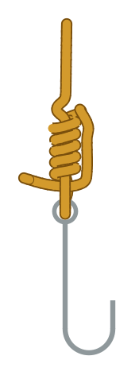
Clinch Knot
The classic way to tie line to a hook, lure or swivel: through the eye, five twists round the line, then back through the small loop by the eye..
●○○ Easy - Stopper knots
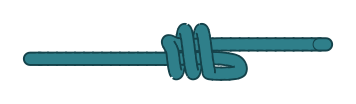
Double Overhand Knot
An overhand knot with one extra turn.
●○○ Easy - Loops
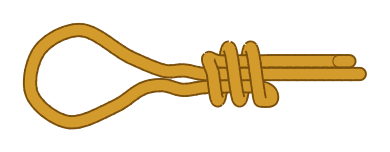
Double Overhand Noose
A running loop held by a double overhand tied round the standing part.
●○○ Easy - Bends
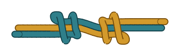
Fisherman’s Knot
Each end ties an overhand knot round the other rope.
●○○ Easy - Hitches
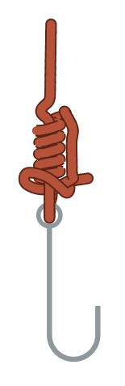
Improved Clinch Knot
A clinch knot with one extra tuck: after going through the small loop by the eye, the end goes back through the big loop it has just made.
●○○ Easy - Loops
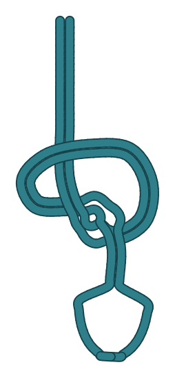
Overhand Loop
An overhand knot tied in a doubled rope.
●○○ Easy - Bends
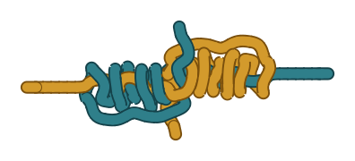
Blood Knot
The angler’s join for two lines of similar size: each end twists round the other line about five times and comes back through the gap in the middle.
●●○ Intermediate - Loops
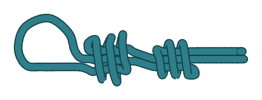
Double Englishman’s Loop
The Englishman’s Loop tied with double overhands.
●●○ Intermediate - Bends
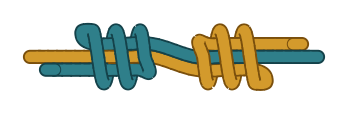
Double Fisherman’s Knot
Each rope ties a double overhand round the other.
●●○ Intermediate - Loops
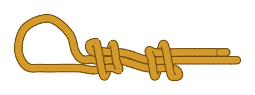
Englishman’s Loop
A fixed loop made of two overhand knots, one in the end round the standing part and one in the standing part round the end.
●●○ Intermediate - Hitches
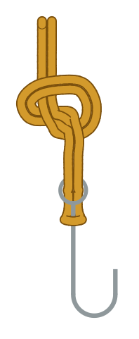
Palomar Knot
A strong knot for tying line to a hook: a bight goes through the eye, an overhand knot is tied with the doubled line, and the bight is passed over the hook so the knot closes round the shank..
●●○ Intermediate - Binding knots
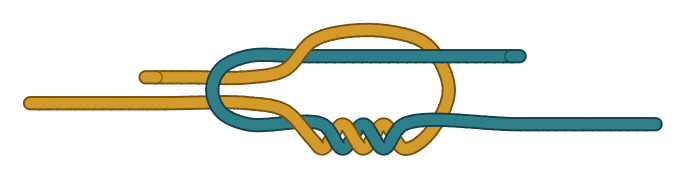
Surgeon’s Knot
A square knot with an extra twist in the first half.
●●○ Intermediate - Binding knots
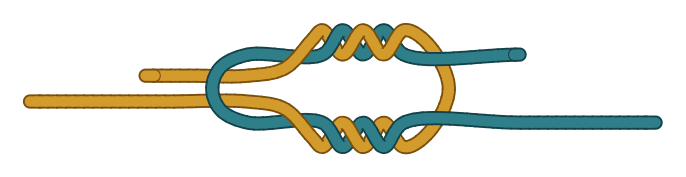
Surgeon’s Knot with Second Tuck
The surgeon’s knot with the extra twist in both halves.
●●○ Intermediate - Loops
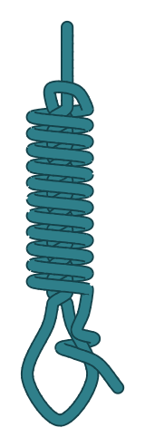
Bimini Twist
A long, strong doubled loop for fishing line.
●●● Advanced - Loops
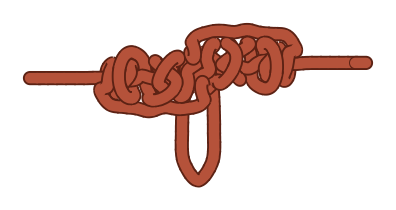
Blood Dropper Loop
A loop standing out from the middle of a line, at right angles to it.
●●● Advanced